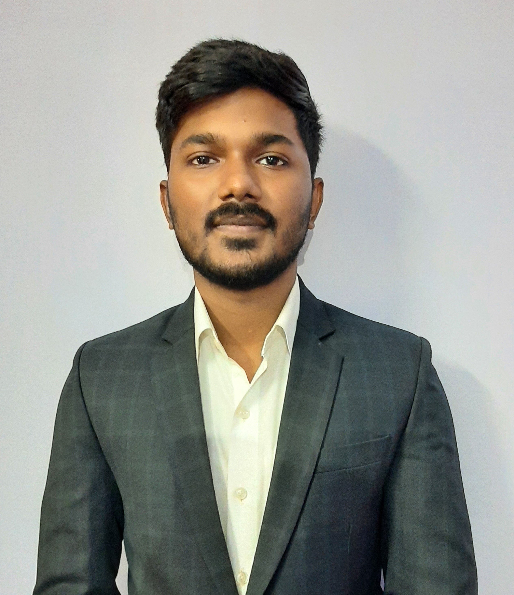

Adarsh Kesharwani

Summary
To work with an organization where my knowledge and skills are used in the
growth of the firm as well as of mine. I wish to gain practical experience to
handle independent assignments in due course.
Education
- Bachelor of Technology Master in Electronics and Communication from Gyan Ganga Institute of Technology and Science(2018-2022)
- Higher Secondary School Completed from Math Science Branch from Christ Church Boys' Senior Secondary School(2017-2018)
- Secondary School Completed from Christ Church Boys' Senior Secondary School(2015-2016)
Work Experience
-
Internship at Cognizant Genc Developer
(Feb 2022 – August 2022)
Completed six months of internship and work on PL/SQL, SQL and Java.
- In this internship, I was assigned the role of ODTS in which I could learn new languages.
- As part of this internship, I was able to develop a new skill to code in languages like SQl, Pl/Sql and Java.
- The internship also helps me build my communication skills.
-
Eye Drowsiness Detection Software(major project)
It’s a software version and updated version of anti-sleep goggles which gives a more accurate and efficient result.
-
Anti-Sleep Goggles(minor project)
This project is a safety gadget that keeps an eye that you are drowsy or not and alarms you before any circumstances.
Skills
Soft Skills
- Management
- Leadership
- Problem Solving
- Team Player
Technical Skills
- C\C++
- Java
- SQL
- Pl\SQL
- HTML
Certfications
- Introduction to Cybersecurity (Cisco)
- Introduction to Packet tracer (Cisco).
- Hands on Electronics Circuits and PCB Designing
Others